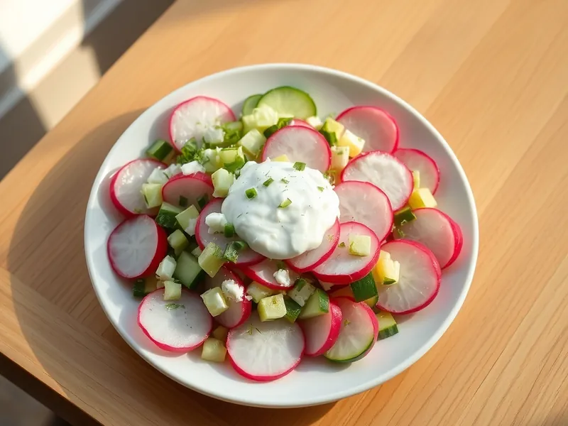

Салат из редиса с огурцом и яйцом со сметаной
Весенний салат из редиса, огурца, яиц и зелёного лука, заправленный сметаной
20 мин3 порц.155 ккал на порциюБ 7 · Ж 11 · У 6Русская кухня
Открыть в приложении: порции, таймеры, список покупок
Продукты на 3 порц.
- Редис10 шт
- Огурцы2 шт
- Яйцо куриное2 шт
- Зелёный лук30 г
- Укроп10 г
- Сметана 20%4 ст. л.
- Сольпо вкусу
Как готовить
- Сварите яйца вкрутую: 10 минут после закипания на среднем огне, затем остудите в холодной воде и очистите.
- Редис и огурцы вымойте, обрежьте хвостики и нарежьте тонкими кружочками или полукружьями.
- Яйца нарежьте кубиком, зелёный лук и укроп мелко порубите.
- Соедините всё в миске, посолите, заправьте сметаной и перемешайте прямо перед подачей.
Совет. Солите и заправляйте в последний момент, иначе редис и огурец дадут много воды. Сметану можно заменить греческим йогуртом.